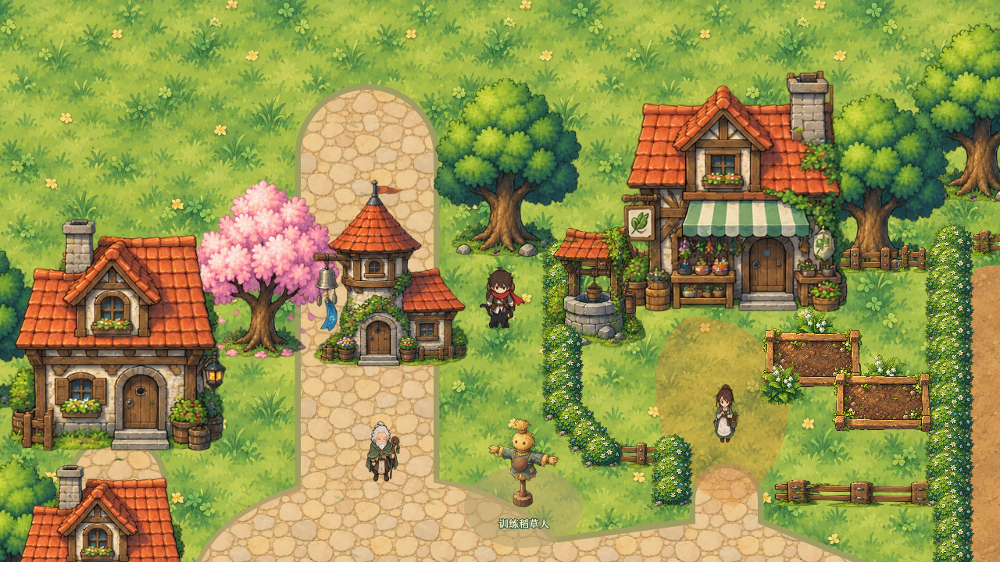
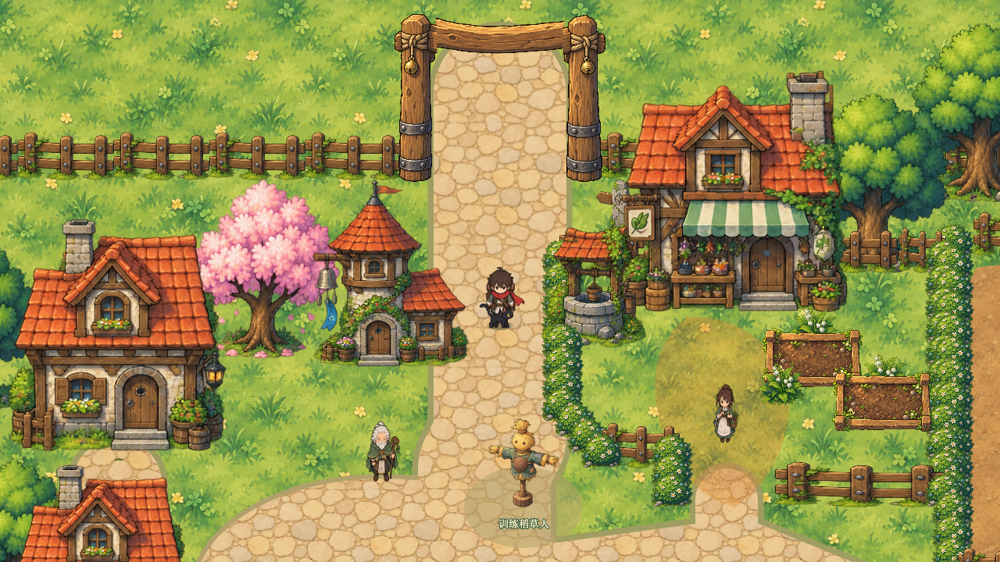
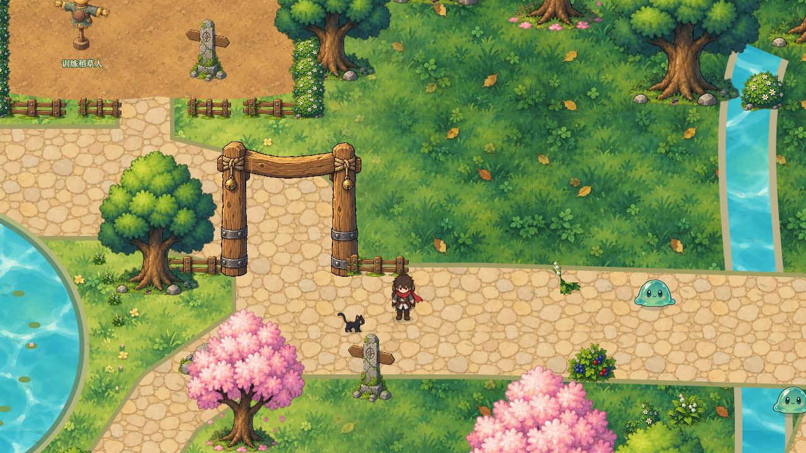
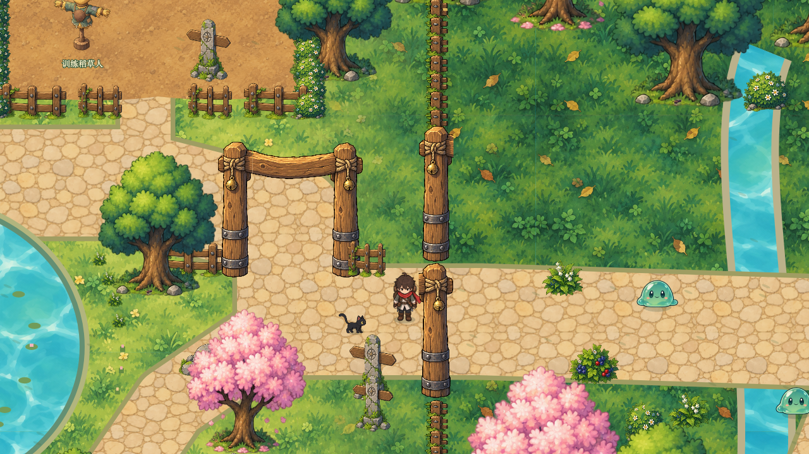
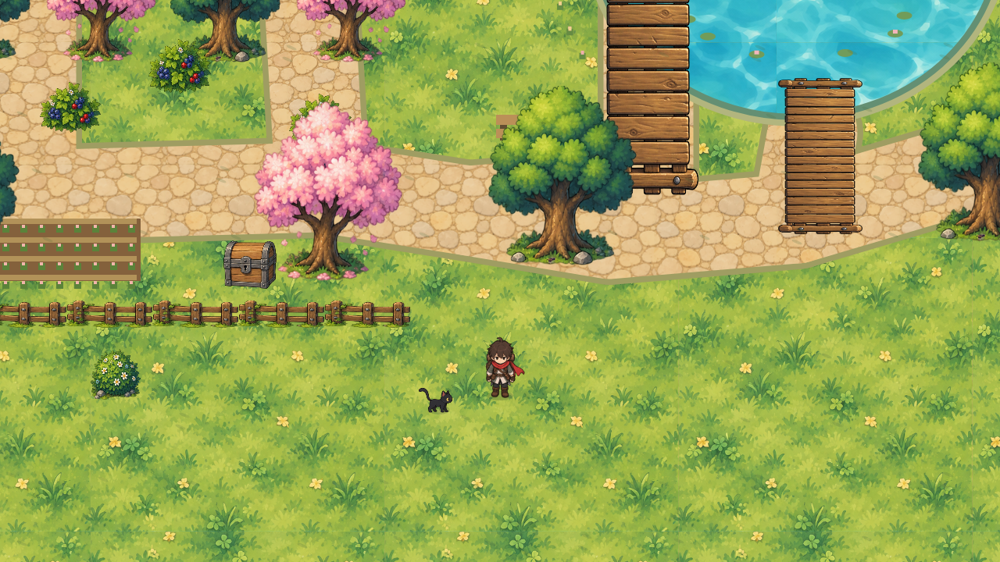
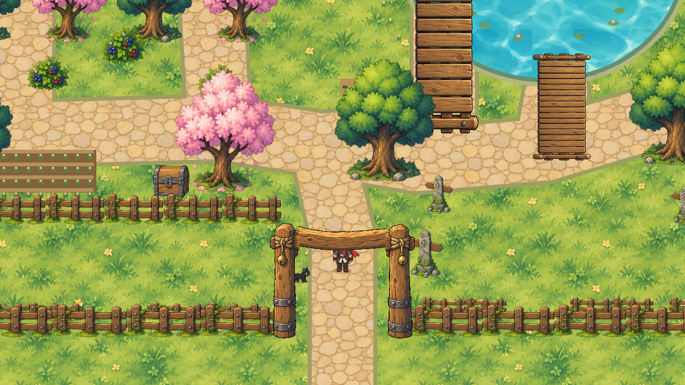
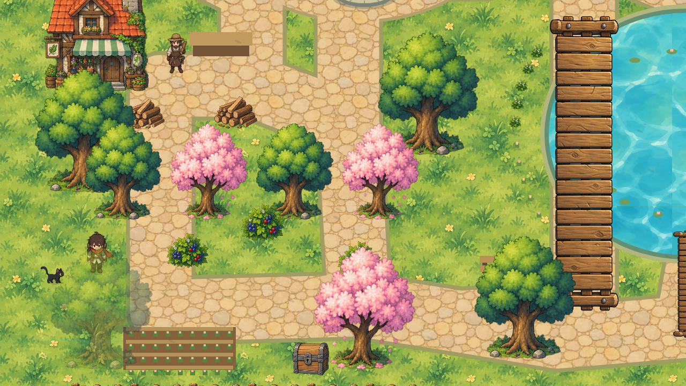
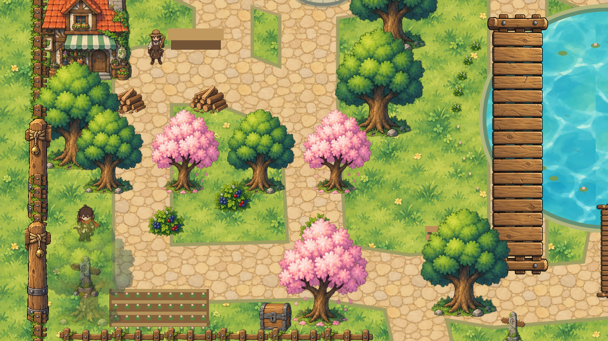
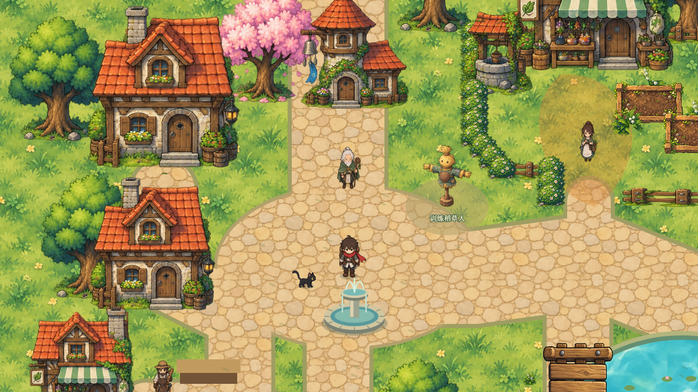
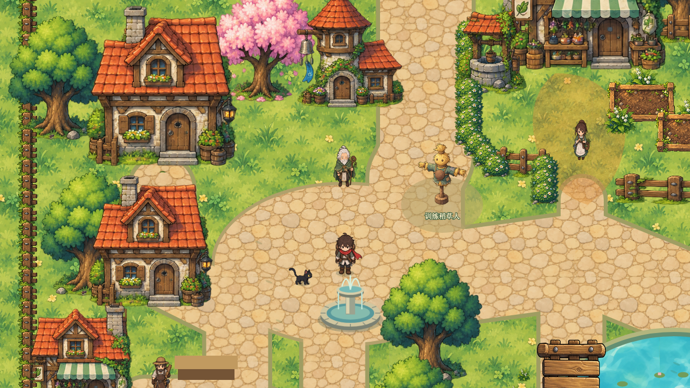

同一冻结提交基础、1280×720、相同站位与镜头规则、第1日08:00。右侧为最终一期候选，左侧为原版。截图通过正式存档导入建立站位，暂停后截图；通行及战斗由另行真实输入回归证明。
美术状态：候选待人工确认。没有自动更新或批准视觉基线；未测目标设备性能。共享工作区的并发弹反、对话和场景美术没有混入此对照。
站位（820，420）


站位（2050，1080）


站位（900，1710）


站位（180，1380）


站位（670，780）

